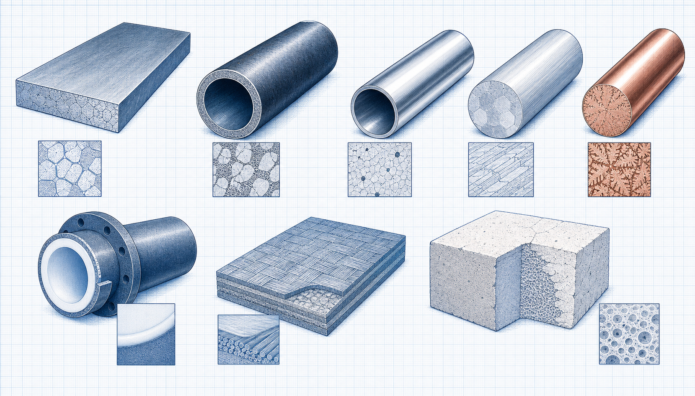

Engineering reference-data guide
Galvanized Steel and Zinc Coatings
Galvanized Steel and Zinc Coatings is a focused engineering reference-data guide within the Industrial Calculation Hub knowledge library. It explains the engineering purpose, physical basis, governing inputs, process or equipment interfaces, common failure mechanisms and the limits of preliminary use.

- Content type
- Engineering reference-data guide
- Canonical ID
- ICH-CAN-047
- Source basis
- Materials and mechanical-engineering literature
- Last reviewed
- 31 August 2026
What Is Galvanized Steel and Zinc Coatings?
Galvanized Steel and Zinc Coatings is a focused engineering reference-data guide within the Industrial Calculation Hub knowledge library. It explains the engineering purpose, physical basis, governing inputs, process or equipment interfaces, common failure mechanisms and the limits of preliminary use.
The value of Galvanized Steel and Zinc Coatings is not a single rule or isolated component decision. It is the disciplined connection between the defined duty, actual service conditions, available evidence and the practical constraints of construction, operation and maintenance. It should therefore be considered with the physical arrangement, incoming condition, uncertainty in the available data, and the responsible engineering discipline rather than as a standalone answer.
Why Does Galvanized Steel and Zinc Coatings Matter?
Reference data supports a controlled comparison of material identity, composition, condition, properties, service environment, fabrication route and applicable standard. A designation alone is not a final selection: confirm the product form, heat-treatment condition, governing specification, corrosion or temperature exposure and inspection requirements.
In practice, early assumptions about capacity, service condition, source data or layout often determine whether an option remains safe, operable and maintainable. Establishing a transparent basis before calculation, selection or modification avoids false precision and makes later review traceable.
Key Terms and Definitions
- Galvanized Steel and Zinc Coatings
- The specific engineering subject and boundary addressed by this page.
- Design basis
- The verified duty, operating range, geometry, material/fluid and requirements used for an assessment.
- Governing condition
- The normal, limiting, transient or degraded case that controls the technical decision.
- Verification evidence
- Measurements, drawings, inspections, calculations or supplier documentation used to check the conclusion.
- Lifecycle condition
- The practical state of installation, operation, inspection, maintenance and future modification.
Fundamental Principle and System Context
Reference data supports a controlled comparison of material identity, composition, condition, properties, service environment, fabrication route and applicable standard. A designation alone is not a final selection: confirm the product form, heat-treatment condition, governing specification, corrosion or temperature exposure and inspection requirements.
The first engineering question is whether the stated relationship or equipment concept represents the real service. Confirm the boundary points, time basis, units, material or fluid state, geometry, line-up, environmental condition and operating mode. Where conditions vary, use an envelope of credible cases instead of one nominal value.
Design Inputs and Engineering Considerations
A useful assessment records the evidence behind each input, whether it is measured, calculated, guaranteed, assumed or still to be confirmed. It also distinguishes normal operation from the condition most likely to govern reliability, integrity, environmental performance, output quality or safety.
Duty and operating range
mechanical, physical and chemical property requirements. Confirm this item against current drawings, measured data and the project basis before relying on a conclusion.
Physical properties and geometry
temperature, pressure, corrosion, erosion and exposure conditions. Confirm this item against current drawings, measured data and the project basis before relying on a conclusion.
Process or equipment interfaces
product form, thickness, welding or machining needs. Confirm this item against current drawings, measured data and the project basis before relying on a conclusion.
Reliability and maintenance
code, client and material-certificate requirements. Confirm this item against current drawings, measured data and the project basis before relying on a conclusion.
Safety and compliance
availability, lifecycle, inspection and maintenance constraints. Confirm this item against current drawings, measured data and the project basis before relying on a conclusion.
Information quality and uncertainty
Use values that match the required reference state and operating point. Check whether a value is nominal, rated, measured, average, maximum, absolute or gauge; whether it applies to the actual product form, material, fluid or equipment; and whether the source revision is current. Report precision that is appropriate to the uncertainty of the inputs.
Step-by-Step Engineering Review Method
- State the decision. Identify whether the work is for screening, design basis, troubleshooting, maintenance, modification or final approval.
- Define the boundary. Mark physical interfaces, reference points and any upstream or downstream systems that can change the result.
- Gather evidence. Use current drawings, data sheets, operating records, test data, inspection observations and applicable requirements.
- Set the cases. Review normal, limiting, start-up, shutdown, maintenance, upset and future conditions that are relevant to Galvanized Steel and Zinc Coatings.
- Apply the suitable method. Use a relationship, calculation, standard or supplier procedure only within its valid range.
- Check the conclusion. Compare the result with independent measurements, physical evidence, previous performance or a qualified specialist review.
- Record limitations. Retain assumptions, uncertainty, actions, responsible person and the condition that would trigger reassessment.
Selection, sizing and change control
Equipment selection must combine technical performance with access, isolation, constructability, inspection, spares, utilities, controls, cost and lifecycle duty. A capacity value alone does not show whether the option can be installed, operated or maintained safely. Any modification that changes the process, load, material, geometry, safety function or control strategy requires a formal review of the original basis.
Industrial Applications
Galvanized Steel and Zinc Coatings is relevant wherever the associated system must be understood, selected, operated, inspected or improved. Typical applications include the following:
- material family and product form within a defined industrial duty, with its interfaces and limitations documented.
- property, composition and service-condition basis within a defined industrial duty, with its interfaces and limitations documented.
- corrosion, temperature and wear environment within a defined industrial duty, with its interfaces and limitations documented.
- joining, fabrication and inspection requirements within a defined industrial duty, with its interfaces and limitations documented.
- traceability, certification and applicable standard within a defined industrial duty, with its interfaces and limitations documented.
When the outcome affects capacity, quality, reliability, worker exposure, emissions, pressure, temperature, rotating machinery or material integrity, obtain current site evidence and qualified review rather than relying on a generic example.
Common Problems, Failure Modes and Causes
Potential failure mechanism
selection by grade name without confirming product form or condition. Use inspection, trend data and a controlled troubleshooting method to establish the actual cause before changing the system.
Potential failure mechanism
unexpected corrosion, embrittlement, wear or temperature-related loss of performance. Use inspection, trend data and a controlled troubleshooting method to establish the actual cause before changing the system.
Potential failure mechanism
joining or coating incompatibility. Use inspection, trend data and a controlled troubleshooting method to establish the actual cause before changing the system.
Potential failure mechanism
missing traceability, certificate review or inspection documentation. Use inspection, trend data and a controlled troubleshooting method to establish the actual cause before changing the system.
Troubleshooting approach
Preserve trend data and field observations before changing a setting or replacing a component. Check the measurement boundary and instrument condition, compare actual operating duty with the design basis, inspect the physical condition, then test the variables most likely to change the outcome. Record the failure path and corrective action so it can be reviewed after the system returns to stable operation.
Lifecycle, Maintenance and Safety Review
Plan inspection and maintenance around credible degradation mechanisms, not only calendar intervals. Review access, isolation, cleaning, lifting, energy sources, hot surfaces, pressure, moving parts, electrical hazards, dust, chemicals, confined-space entry and waste handling before work begins. The correct maintenance action must restore both the component and the system condition.
For Galvanized Steel and Zinc Coatings, retain the design basis, source data, assumption set, calculation or assessment method, verification evidence and review decision. Reassess the conclusion whenever the duty, material, geometry, operating condition, equipment arrangement or governing requirement changes.
Implementation, Performance Verification and Change Control
Before a design, procurement or operating decision is finalised, convert the educational framework into a controlled project basis. Identify the governing standard, equipment supplier requirements, inspection points, interfaces, acceptance criteria and the owner of each outstanding item. Check that the selected arrangement can be installed, isolated, accessed, maintained and returned to service without creating an unreviewed hazard or operational constraint.
Commissioning should demonstrate performance at representative, stable conditions rather than only at a convenient nominal point. Record the instrumentation and calibration status, source data, line-up, operating case, measured values, deviation from expected behaviour and any corrective action. Compare results with the approved design basis and distinguish a real equipment limitation from a change in feed, fuel, material condition, ambient condition or measurement method.
For Galvanized Steel and Zinc Coatings, retain trend data that exposes early degradation: duty, energy or utility use, pressure or temperature response, vibration or condition evidence where relevant, quality or emissions outcome, alarm history and maintenance findings. A successful outcome is not just a calculation result; it is a repeatable operating condition that remains within defined limits through its lifecycle.
Practical close-out checklist
- Confirm the final boundary, source revisions and governing operating case.
- Verify interfaces with upstream and downstream equipment, utilities, controls, access and safety systems.
- Compare measured performance with the documented acceptance criteria on the same condition basis.
- Record residual risks, limitations, maintenance actions and the trigger for reassessment.
- Use management-of-change control whenever the material, duty, geometry, equipment or protective function is altered.
These steps are particularly important when Galvanized Steel and Zinc Coatings affects reliability, process availability, environmental duty, rotating machinery, pressure, temperature, worker exposure or material integrity. They help ensure that a technically plausible selection remains safe and practical after installation.
Frequently Asked Questions
What should be defined first?
Define the actual duty, boundary, operating range and decision that Galvanized Steel and Zinc Coatings is intended to support.
Can a typical value be used for final design?
No. Confirm the relevant property, geometry, standard, source revision and service condition for the actual project.
Why are interfaces important?
A local component can appear satisfactory while the combined process, supports, utilities, controls, access or discharge route limits the result.
Which operating cases should be considered?
Review normal, minimum, maximum, start-up, shutdown, upset, maintenance and credible future conditions where they can change the governing case.
How should the result be checked?
Use current drawings, calibrated measurements, inspection records, supplier information and qualified review on the same condition basis.
Can this article approve a project change?
No. It is an original educational reference. Final design, procurement, code, safety and operating decisions need controlled project information and qualified approval.
What should be retained in the technical record?
Keep inputs, units, source revisions, assumptions, method, results, limitations, reviewer comments and any verification action.
When should the assessment be repeated?
Repeat it after a material, geometry, loading, process, control, equipment-condition or regulatory change.
References
- Mechanical Engineers’ Handbook: Materials and Engineering Mechanics. Supplied source library.
- Mechanical Engineering Handbook. Supplied source library.
Original educational summary informed by the supplied literature. It does not reproduce protected source text, figures, tables or standards material.